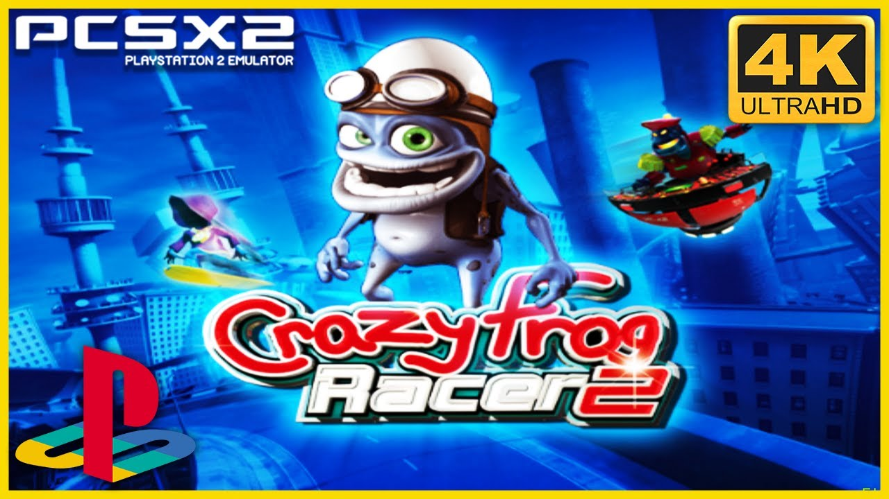

Crazy Frog

Crazy Frog Racer is a European and Australian only video game developed by Neko Entertainment and published by Digital Jesters. A year later in 2006 a sequel was released, entitled Crazy Frog Racer 2.
Crazy Frog Racer is a European and Australian only video game developed by Neko Entertainment and published by Digital Jesters. A year later in 2006 a sequel was released, entitled Crazy Frog Racer 2.